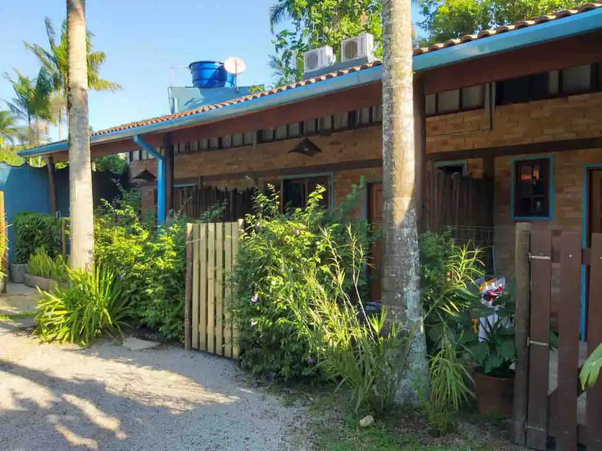
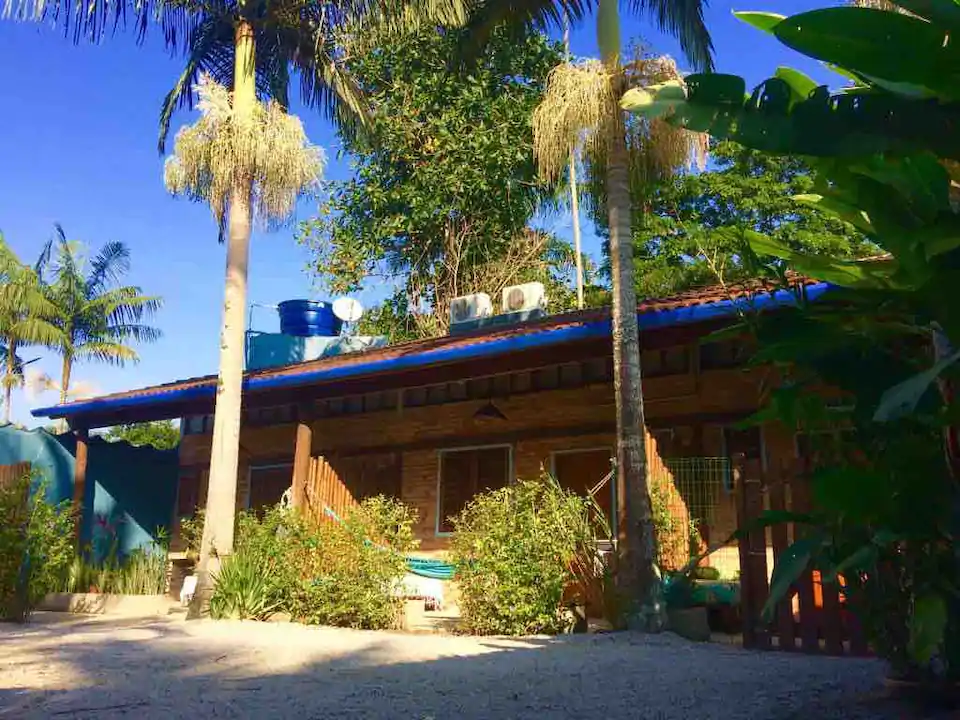
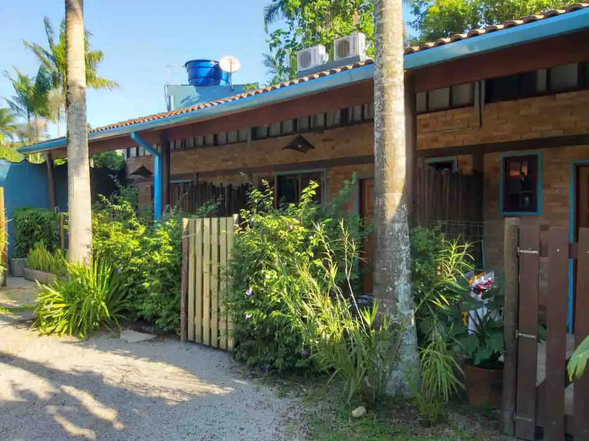
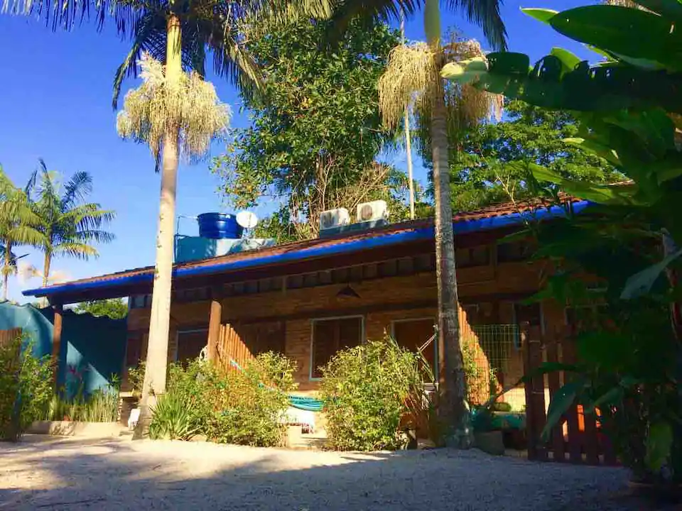
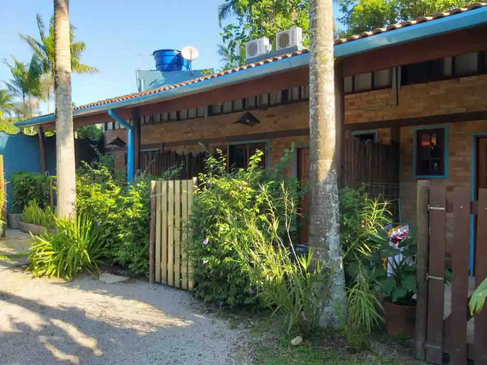
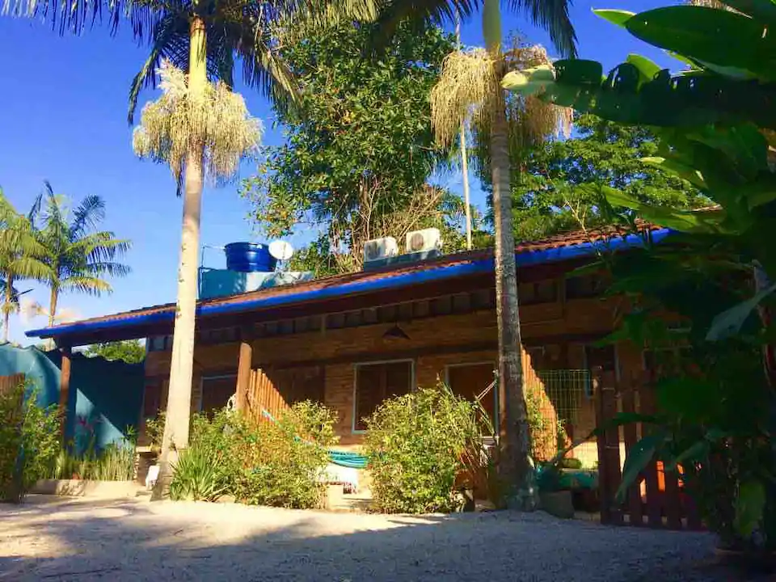

São Sebastião, São Paulo, Brasil


5 hóspedes · 1 quarto · 3 camas · 1 banheiro


Nossos chalés são rústicos, aconchegantes e familiar, com quartos bem arejados e varanda privativa com uma bela rede para relaxar. Tudo feito com nossas próprias mãos com muito carinho e rodeados pela natureza incrível do Litoral Norte de São Paulo.
São três chalés individuais, para até cinco pessoas cada. Bem localizados, ótimos para alugar com a família ou amigos. Na parte interna, cozinha com fogão, geladeira, pia e utensílios, uma cama de solteiro, banheiro com box de vidro e uma boa ducha elétrica. No mezanino, um dormitório bem arejado com cama de casal e um sofá cama para dois, uma bela TV de 43" e um belo Ar Condicionado.
Cada chalé possui um varanda privativa e espaçosa, onde é possível fazer suas refeições e relaxar apreciando a beleza do lugar. Na área comum, espaço com churrasqueira, tanque, ducha e uma vaga de garagem para cada chalé com portão fechado. Tudo rodeado de bambus, palmeiras e muito verde.
Fornecemos roupas de cama, toalhas de banho e serviço de quarto.
 Check-in: 16:00 - 01:00
Checkout: 12:00
Check-in: 16:00 - 01:00
Checkout: 12:00
 Proibido fumar
Proibido fumar
 Não são permitidas festas ou eventos
Não são permitidas festas ou eventos
 Animais de estimação são permitidos
Animais de estimação são permitidos
Somos uma família que construiu este espaço com muito amor para compartilhar Maresias com vocês. Portanto, esperamos que desfrutem dos chalés com esse mesmo sentimento, e tenham carinho com nossas instalações e com os demais hóspedes.
Por ser um ambiente familiar, NÃO É PERMITIDO USO DE DISPOSITIVOS SONOROS, e pedimos silêncio após as 22h.
Aceitamos pets EDUCADOS com muito prazer, por isso disponibilizamos ALGUNS chalés com a varanda cercada. Assim podem ficar seguros e tranquilos com seu amiguinho. Sempre recomendamos que passeiem regularmente com ele, para que faça suas necessidades na rua e fique calmo e feliz. Temos outros hóspedes no local, e o que mais prezamos é o bem estar de todos. Portanto NÃO É PERMITIDO DEIXAR SEU PET SOZINHO NO CHALÉ.
 4,93 (2 comentários)
4,93 (2 comentários)
 Juan Urrutia - abril de 2021
Juan Urrutia - abril de 2021
Acomodacao extremamente aconchegante e anfitrião sempre disposto a tirar todas as dúvidas e ajudar! Recomendo a todos! Espaço super limpo e aconchegante. Alexandre é super gente boa e prestativo. A praia é perto, 10 min a pé. Vale mto à pena.
 Isarael Marques - março de 2021
Isarael Marques - março de 2021
Fiquei quase uma semana no chalé, tive dias incríveis. O Alexandre foi super respeitoso, educado e respondeu a todas as dúvidas que tive. Inclusive buscou eu e minha namorada no check-in porque chegamos tarde e não temos carro. O lugar é massa, limpo e aconchegante demais, me senti em casa. O que mais me encantou foi o cuidado e carinho do serviço de quarto que sempre quando íamos a praia deixava tudo limpinho, toalhas e roupas de cama novas. Em dois dos dias que fiquei estava batendo um vento forte e fiquei na área externa na rede e o barulho das arvores era muuuito gostoso, foi um momento muito relaxante da viagem pra mim. A localização é ótima, consegui fazer absolutamente tudo a pé, mercado, farmácia, restaurantes e o principal a praia. Importante pra quem tem alergia a picadas levar repelente, na parte externa pode ter alguns mosquitos, mas pra quem quer ficar dentro com ar ligado, fica super fresquinho e não entra nenhum.